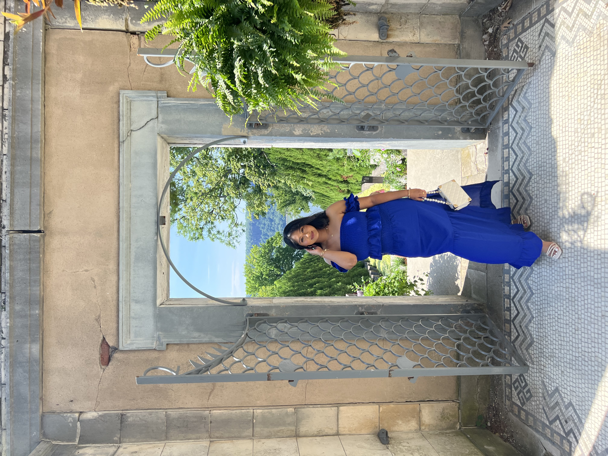

Here's A little about Me..
I grew up in Guyana located in South America. Guyana is considered the biggest caribbean island and there mostly known for there gold and most recently oil. The native language there is english but we call it broken english similar to patio like jamaicans. I grew up in Guyana till the age of 14 when we moved to the states were I continued my education starting from high school. After graduating high school I pursued a career in business where I graduated with honors and a double bachelors degrees. My first job was as a Teller at Santander Bank. Within 6 months I was promoted to BOM (Branch operations Manager), This roll thought me the ins and outs of the banking world. It was extremely tuff during the COVID years because I had to travel and manage multiple branches completing all there operations as well.
Eventually I applied for a corporate position where I got accepted and worked on vehicle loans for about a year. I eventually moved into a bigger corporate roll in New York City where I also worked for bout a year. Now I am an Assistant Vice President for a different company. After all the stressful days and nights studying its all starting to come together.
Honeymoon

As much as I love the idea of traveling I wasn't allowed to, due to having over protective parents. When I met my husband we dated for 3 years before we decided to spend the rest of our lives together. We decided to go to Tulum for our honeymoon, it was honestly the best choice we made. We went for a week and because the resort was so big and beautiful we always had something to do.
One thing about me is I love to dress up and to take photos. The photos help me capture all the memories because I do plan to travel all over the world. Capturing different views and experiences through my eyes.